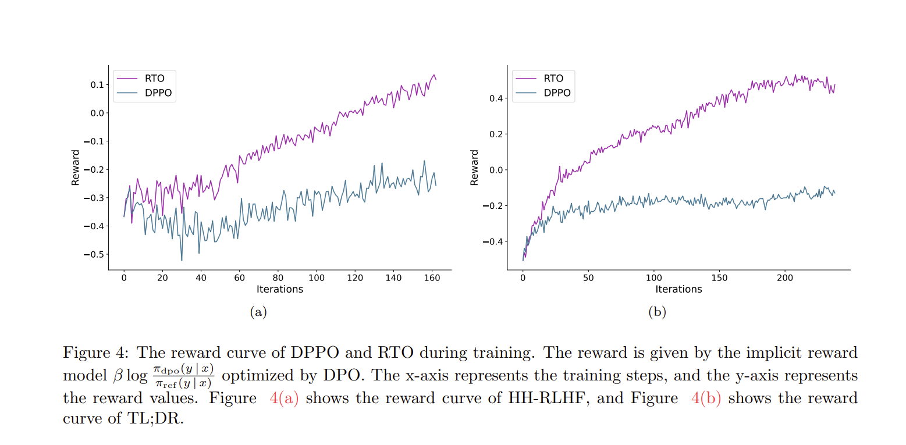

|
|
|
I'm a first year CS Ph.D. student at Princeton University, advised by Prof. Ravi Netravali and Prof. Tri Dao. Previously, I completed my undergraduate studies in Computer Science at Peking University with honors, where I was fortunate to be advised by Prof. Di He and Prof. Liwei Wang. I have the privilege of working with Prof. Zhihao Jia at CMU's Catalyst as a research intern in summer 2024. Feel free to drop me an e-mail if you would like to connect! ~ Email | Google Scholar | GitHub | Twitter ~ |
I am passionate about machine learning and systems.
• As for machine learning, I focus on Generative AI such as Large Language Models and Diffusion Models.
• As for systems, I am interested in building efficient and scalable systems for machine learning applications.
I am enthusiastic about contributing to the synergy between these fields.
|
|

|
|

|
• Reviewer for ACL 2025, ICLR 2025, CVPR 2024-2025.
• Teaching Assistant for Introduction to Computer Systems (CSAPP) at Peking Univeristy, Fall 2024.
• Research Intern at Microsoft Research Asia, ML Group, Oct 2024 - June 2025.
• Research Intern at Catalyst, Carnegie Mellon University, Summer 2024.
• Research Intern at CoRe Lab, Peking University, Summer 2023.
I have a passion for enjoying delicious food and watching musicals. My current favorite musical is Sleep No More.
This template is a modification to Jon Barron's website.